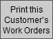

Print Work Orders
It is important to understand that the printed Work Order is the blueprint for constructing your custom frame job - it is not a customer document.
-
You may opt to have the Work Order's footnote/disclaimer signed by the customer and then leave the document with the shop.
-
A barcode is included for easy look-up.
How to Print a Single Work Order
-
Go to the specific Work Order you need to print.
-
Click the Printer icon.

Note: This button only prints the current Work Order; it will not include any of the others. -
A print preview of the Work Order appears.
-
Click Save as PDF or Continue to print.
How to Print Multiple Work Orders
-
Go to the specific Work Order you need to print.
-
Click the Print Documents sidebar button.

-
The Print Documents window appears.

-
In the Print For Shop section, click the All [Customer Name]'s Orders button.
This shows how many orders are grouped together, eg. 1 of 5, 2 of 5, 3 of 5, etc. -
A print preview of the all customer's Work Orders appears.
-
Click Save as PDF or Continue to print.
OR
-
Go to Work Orders file form view
-
Click the Print this Customer's Work Orders sidebar button.

-
A print preview of the Work Order(s) appears.
-
Click Save as PDF or Continue to print.
How to Print Two (2) Work Orders per page
To save paper and clutter, Work Orders may be printed 2 to a page.
-
Note: using this option will limit the number of components shown on the printed Work Order and should only be used for high volume basic framing jobs.
-
A barcode allows for easy look up.
Step One
-
On the Main Menu, in the Work Order section, open the Options tab.
-
Click the More Options... button.
-
Open the Print Defaults tab.
-
Put a check in the Print two orders per page checkbox.
-
Click Done.
This shows how many orders are grouped together, e.g. 1 of 5, 2 of 5, 3 of 5, etc.
Step Two
-
On a Work Order (form view), click the Print This Customer’s Work Orders sidebar button.
-
A print preview of the Work Order appears.
-
Click Save as PDF or Continue to print.
How to Reprint a Single Work Order
If you make a mistake on one of multiple orders placed by the same customer, you can reprint just the one that needs correcting.
-
Find the Work Order you wish to reprint.
-
Make the corrections.
-
Click the Printer icon at the top.
This button will only print the current Work Order. It will not include any of the others.
Use the Print Documents sidebar button for normal printing purposes. -
A print preview of the Work Order appears.
-
Click Save as PDF or Continue to print.
© 2023 Adatasol, Inc.